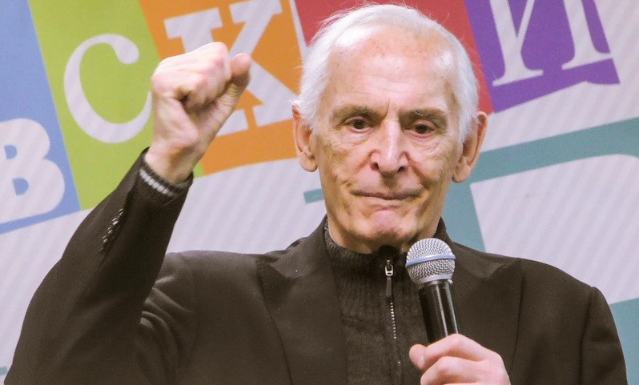

Лановой Василий Семёнович

Дата рождения 16 января 1934
Место рождения Москва, СССР
Дата смерти 28 января 2021 (87 лет)
Место смерти Москва, Россия
Гражданство СССР Россия
Профессия актёр, театральный педагог
Годы активности 1954—2021
Театр Театр имени Е. Б. Вахтангова
Награды
Герой Труда Российской Федерации — 2019
Орден «За заслуги перед Отечеством» III степени — 2008 Орден «За заслуги перед Отечеством» IV степени — 2004
Орден Александра Невского — 2013 Орден Почёта — 2001 Орден Дружбы народов — 1994
Орден «За заслуги» ІІ степени (Украина) — 2014 Орден «За заслуги» ІІІ степени (Украина) — 2004
Знак преподобного Сергия Радонежского Медаль «За заслуги перед Ставропольским краем» Медаль «Памяти героев Отечества» — 2016
Лауреат премии Минобороны России в области культуры и искусства
Народный артист СССР — 1985 Народный артист РСФСР— 1978 Заслуженный артист РСФСР — 1968 Moskow Honorary Citizen mini.png
Ленинская премия — 1980 Знак отличия «За заслуги перед Москвой» Золотая маска — 2018
Василий Семёнович Лановой (16 января 1934, Москва — 28 января 2021[1], Москва) — советский и российский актёр театра и кино, мастер художественного слова (чтец), общественный деятель, театральный педагог. Артист Государственного академического театра им. Е. Вахтангова (1957—2021). Герой Труда Российской Федерации (2019), народный артист СССР (1985)[2], лауреат Ленинской премии (1980).
Василий Семёнович Лановой родился 16 января 1934 года в Москве. Сын украинских крестьян из села Стримба Кодымского района Одесской области. В 1931—1932 годах переехали в Москву, куда их позвал брат отца. Со времени переезда в Москву родители Ланового работали на химическом заводе, в цеху, который с 23 июня 1941 года стал разливать вручную противотанковую жидкость и «коктейль Молотова» и в результате, по словам Василия, через пять дней у всех 72 работников цеха «была уничтожена нервная система рук и ног». Все пострадавшие были отправлены на лечение в санаторий, но мать Ланового так и осталась инвалидом первой группы, а отец — второй.
Великую Отечественную войну семилетний Василий встретил в селе Стримба у бабушки с дедушкой, куда приехал в гости из Москвы 22 июня 1941 года. Село было захвачено немцами. Немецкий солдат ради забавы пустил две автоматные очереди над головой Василия, после чего он стал сильно заикаться[4].
В 1947 году Лановой начал заниматься в театральной студии при Дворце культуры ЗИЛа, где получил первые уроки сценического мастерства. В 1951 году на Всесоюзном конкурсе самодеятельных артистов Лановой и будущий режиссёр Таланкин были награждены грамотами.
Окончил школу с золотой медалью. В 1953 году поступил на факультет журналистики МГУ, но проучился там всего полгода. Затем поступил в Театральное училище имени Б. Щукина (ныне Театральный институт имени Бориса Щукина). Ещё во время учёбы в 1954 году снялся в своём первом фильме «Аттестат зрелости», а в 1956 году сыграл главную роль в фильме «Павел Корчагин». В 1957 году окончил Театральное училище имени Б. Щукина (курс Ц. Л. Мансуровой). Во время учёбы познакомился с актрисой Татьяной Самойловой, женился и прожил с ней несколько лет.
Член КПСС с 1968 года.
С 1957 по 2021 — артист Государственного академического театра имени Е. Вахтангова, где играл роли Фортинбраса («Гамлет»), Маяковского («Конармия»), Цезаря («Антоний и Клеопатра»), Пушкина («Шаги Командора»), Троцкого («Брестский мир»), Джорджа Бернарда Шоу («Милый лжец») и многие другие.
Одновременно снимался во множестве фильмов: «Павел Корчагин» (1957), «Алые паруса» (1961), «Война и мир» (1965—1968), «Офицеры» (1971), «Семнадцать мгновений весны» (1973), «Анна и Командор» (1974), «Дни Турбиных» (1976) и других.
В 1979 году озвучил многосерийный документальный фильм «Великая Отечественная», созданный кинематографистами под руководством Р. Л. Кармена. Его работа была отмечена самой престижной премией того времени — Ленинской.
Признанный мастер художественного слова. Его творческие программы включают поэзию А. Блока, А. Ахматовой, В. Маяковского, О. Берггольц, А. Пушкина и других.
В 1983 году написал книгу «Счастливые встречи», а в 2004 году — книгу «Летят за днями дни».
С 1985 года преподавал на кафедре сценической речи в Театральном институте имени Б. Щукина. Был профессором и заведующим этой кафедрой (1995).
Более 20 лет возглавлял Международный детский кинофестиваль «Алые паруса Артека».[источник не указан 329 дней] Василий Лановой, 2009 год
В 2017 году был занят в спектаклях:[5][6]
«Посвящение Еве» Э.-Э. Шмитта (постановка С. И. Яшина);
«Пристань» — спектакль-бенефис (постановка Р. Туминаса);
«Последние луны» (постановка Р. Туминаса). Две истории по пьесам Ф. Бордона «Последние луны» и Г. Мюллера «Тихая ночь»; главную роль в первой пьесе играет В. Лановой, во второй — И. Купченко.
Василий Семёнович Лановой скончался 28 января 2021 года на 88-м году жизни в Москве от осложнений, вызванных COVID-19[7][8]. Прощание с Лановым состоится 1 февраля в Москве в Тетре им. Вахтангова. Похороны пройдут в тот же день на Новодевичьем кладбище[9].
Семья
Отец — Семён Петрович Лановой (1907—1979), крестьянин.
Мать — Агафья Ивановна Лановая (1910—1986), крестьянка.
Сестра — Валентина Лановая (1937—2002).
Первая супруга (с 1955 по 1958): Татьяна Самойлова (1934—2014), актриса, народная артистка РФ (1992).
Вторая супруга (с 1961 по 1971): Тамара Михайловна Зяблова (1929—1971), актриса Московского драматического театра им. А. С. Пушкина и режиссёр телевидения; погибла в автокатастрофе.
Третья супруга (с 1972): Ирина Купченко (род. 1948), актриса театра и кино, народная артистка РСФСР (1989).
Сын — Александр Лановой (род. 1973), выпускник исторического факультета МГУ.
Сын — Сергей Лановой (1976—2013), выпускник экономического факультета МГУ, работал в Министерстве финансов; скончался от сердечного приступа.
Внучка — Анна — дочь сына Сергея, родилась вне брака[10].
Общественная деятельность
Василий Лановой с фотографией своей матери, Владимир Путин, Ирина Купченко с фотографией отца Василия Ланового. Бессмертный полк. Москва, Красная площадь, 9 мая 2015 года
Председатель межрегионального общественного фонда «Армия и культура» с 1995 года. Член Общественного совета при Министерстве обороны Российской Федерации, председатель комиссии Общественного совета о культурно-шефской работе и межнациональным отношениям.
Член Общественной палаты Российской Федерации второго состава (2008—2010).
Председатель правления Международного культурного центра «Слава»[11].
Член Общественного совета[12] при Следственном комитете Российской Федерации.
Председатель попечительского совета патриотической акции «Бессмертный полк»[13]. Сопредседатель Центрального штаба Общероссийского общественного гражданско-патриотического движения «Бессмертный полк России»[14].
Политические взгляды
Был членом КПСС с 1968 года. Поддерживал КПРФ. Также участвовал в Русском марше.
11 марта 2014 года подписал Коллективное обращение к российской общественности деятелей культуры России в поддержку позиции Президента по Украине и Крыму[22].
На президентских выборах 2018 года — доверенное лицо кандидата в Президенты России Владимира Путина.
В 2018 году был доверенным лицом кандидата в мэры Москвы Сергея Собянина.
За несколько дней до выборов в Мосгордуму 8 сентября 2019 года в СМИ появился «список Ланового», позиционировавшийся как альтернатива Умному голосованию. Вскоре сам актёр отверг причастность к этому списку, информацию о котором активно распространяли СМИ Евгения Пригожина, а также сайты и паблики в социальных сетях, связанные с московской мэрией.